Build it yourself in Microsoft Fabric | Browser-first | Two-day lab
Edition 1.1, November 11, 2026 UTC. Based on the supplied ATL Housing execution guide, draft v0.4. Screenshots are from the actual ATLhousing reference environment; they are not mockups. Fabric menus can change; identify controls by their labels.
What you will build: original Excel landing, metadata-driven SQL ingestion, typed Warehouse staging, dimensional transformations, an explicit Direct Lake model, the HT1-HT10 report, Spark DQ and a monitored master pipeline. The requested AI extension adds a source-grounded business ontology and a published data agent, with manual setup and 15 sample question/answer exercises in M15-M16.
This is a manual build, not an automation quick start. You will click the
Fabric controls, create each item, enter settings and paste the supplied SQL,
Power Query, DAX and notebook cells yourself. Do not run deploy*.py, the data
generator or the source loader.
Protect the reference build. Build only in the participant workspace assigned by the instructor. The shared
ATLhousingworkspace shown in screenshots already contains the reference solution. If you have not been assigned a separate build workspace, use the inspection track: open items, compare settings and run read-only checks, but do not save changes, reload tables or start pipelines.
workshop-assets for copy-and-paste content and data\excel for the
unchanged original workbooks supplied in the distribution pack.No Azure capacity purchase, source restore, SQL source reload, source-row update or public GitHub Pages publishing is part of the attendee build.
| Day | Modules | Work product |
|---|---|---|
| 1 morning | M1-M3 | Access, landing, connections, schemas and control/staging tables |
| 1 afternoon | M4-M7 | SQL and Excel ingestion, transforms and base master pipeline |
| 2 morning | M8-M10 | Date dimension, Direct Lake, measures, RLS configuration and report |
| 2 afternoon | M13, return to M7 | Spark checks, final reconciliation/framing and accepted master run |
| Presenter/admin sessions | M11, M12, M14 | Conditional zero-copy, governance, DevOps and Databricks modules |
| Additional AI lab, 60-90 minutes | M15-M16, after M9/M13 | Business ontology, published data agent and grounded Q&A |
M13 is deliberately completed before the final M7 acceptance run. The report's DQ page is created in M10 and receives actual run results in M13.
Complete the right-hand column with the instructor. Never substitute an unrelated existing connection just because it is visible.
| Setting | Reference / required value | Your assigned value |
|---|---|---|
| Tenant/account | Approved workshop tenant; organizational account | __________________ |
| Build workspace | Instructor assigns an isolated participant workspace | __________________ |
| Workspace ID | Reference only: 4d77b5c8-d96f-41df-83e1-954c582336d8 |
__________________ |
| Capacity | Existing approved capacity; reference is F8, West US 3 | __________________ |
| SQL server | sql-atlhousing.database.windows.net |
__________________ |
| Source database | ATLHousing, schema hs | ATLHousing |
| Source access | Read-only for the workshop; no destructive loader | Confirmed: ______ |
| Storage | fabridemo, container atldemo |
Confirmed: ______ |
| Lakehouse | LH_ATL_Landing in your workspace |
ID: ______________ |
| Warehouse | WH_ATL_HS in your workspace |
SQL endpoint: ____ |
| Approved Excel batch | Instructor assigns a unique folder/batch name | __________________ |
| Semantic model | SM_HouseholdsServed in your workspace |
ID: ______________ |
| Ontology | ONT_ATL_Housing, same validated model |
ID: ______________ |
| Data agent | DA_ATL_Housing, published only after testing |
ID: ______________ |
| Viewer/program map | Approved identity and allowed program codes | Pending / ________ |
| Fiscal calendar / label | Business-approved values only | Pending / ________ |
| Alert / schedule | Approved destination and enablement decision | Pending / ________ |
| Draft shorthand | Use in this workshop |
|---|---|
| Example source database name | The user-approved source is ATLHousing |
| Approximate source counts | Use the verified count table in M4, not approximate draft numbers |
| Unit.PropertyKey | Source Unit has PropertyID; resolve the dated property version |
| FamilyMember.MemberKey | Source FamilyMember uses HouseholdID; do not join it to every snapshot |
| Summarized supportive totals | Original roster columns are ReportMonth, HouseholdID, Program, SupportType |
| Global staging truncate first | Do not globally truncate; use current-run landing and transactional publication |
| Distinct household count | Preserve household-program-month observations, including second-program records |
| Hide source personal columns | Exclude unnecessary columns from the model; hiding is not security |
| All guide modules already accepted | Core data/report works; security, alerts, schedules and presenter modules have explicit gates |
Objective: start with the correct tenant, approved existing resources and readable original data. Prerequisite: instructor-assigned workspace and access.
https://app.fabric.microsoft.com in Edge or Chrome.data\excel. Confirm 24 .xlsx files:
12 UnitAvailability_YYYYMM.xlsx and 12 SupportiveHousing_YYYYMM.xlsx,
covering January-December 2025.UnitAvailability; the supportive sheet is Roster. No password should be
requested. Close without saving changes.excel/ blobs
in this environment were encrypted; do not overwrite them or attempt to remove
their encryption. A password prompt is a Stop, not a reason to regenerate data.Check: correct workspace, authorized source access, 24 readable originals. Stop: missing access, an unexpected tenant, encrypted files or production data. Catch-up: instructor supplies access and the original kit; no regeneration.
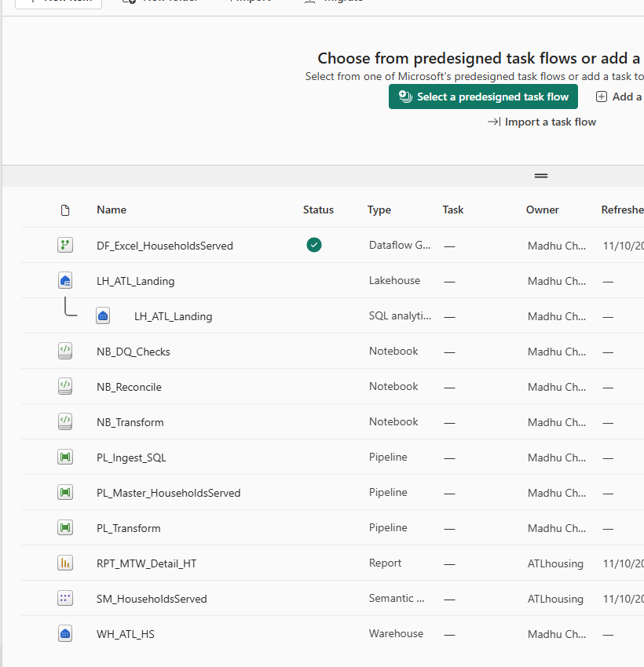
Objective: create your destination objects without altering the source.
WH_ATL_HS and choose Create.LH_ATL_Landing and choose Create. Use the default supported Lakehouse
options unless your instructor has provided a different configuration.landing.
Inside it create excel, then the unique approved batch folder from your worksheet..xlsx files from data\excel, and wait for every upload to complete.Check: one Warehouse, one Lakehouse, exactly 24 originals in
Files\landing\excel\<your-approved-batch>.
Stop: the current folder is the shared reference Lakehouse or an old batch.
Catch-up: inspect the reference folder with the instructor; do not replace it.
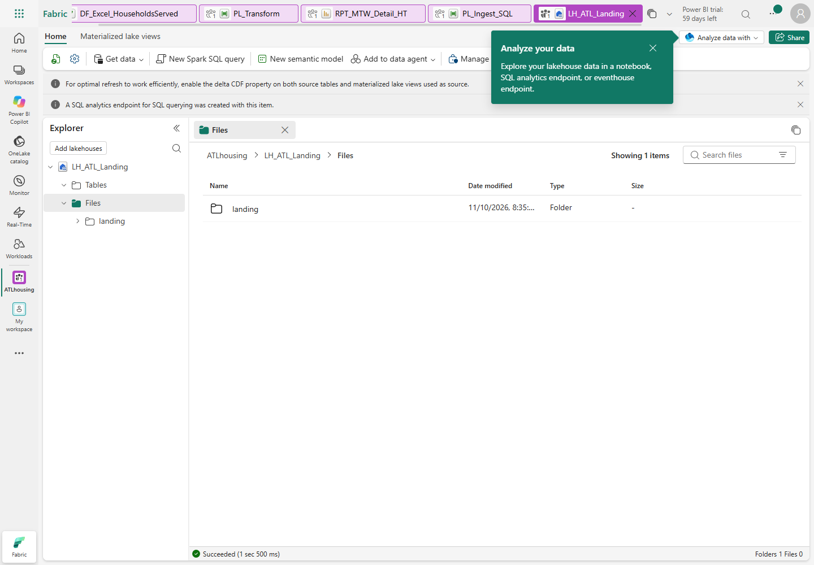
Objective: prepare the destination and an approved organizational SQL connection.
ATL_HS_SQL_Source (or your instructor-assigned unique name).sql-atlhousing.database.windows.net and database ATLHousing.GO, run the blocks between GO separators
individually, in order. Never remove validation or exception handling.stg, prd and mtd.stg.AnswerKey, the two Excel staging
tables, control tables, prd.DQ_Results and the stored procedures.SELECT SourceSchema,SourceTable,TargetTable,LoadType,WatermarkColumn,IsActive
FROM mtd.TablesToCopy ORDER BY SourceTable;
Full entries. Watermarks are NULL: this workshop does full
loads, not a falsely advertised incremental Member load.WAREHOUSE_SQL_ENDPOINT; notebook cells
must not contain a whole connection string or an Azure SQL source hostname.Check: ten active metadata entries, correctly typed empty destination tables,
and four relevant procedures including mtd.usp_LogRun.
Stop: a SQL editor points to ATLHousing while you are about to execute DDL.
Catch-up: paste the same reviewed SQL files manually into your assigned Warehouse.
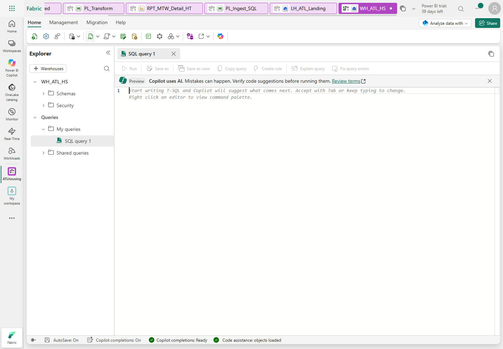
Objective: SQL SELECTs -> immutable run-scoped Parquet -> transactional staging. This deliberately avoids the draft's global truncate-first pattern.
PL_Ingest_SQL.Lookup active full-load tables.WH_ATL_HS Warehouse connection, choose Query,
and paste lookup.sql.ForEach SQL table.4, and use Add dynamic content for Items:@activity('Lookup active full-load tables').output.value
0 for this controlled lab. Do not configure overlapping runs.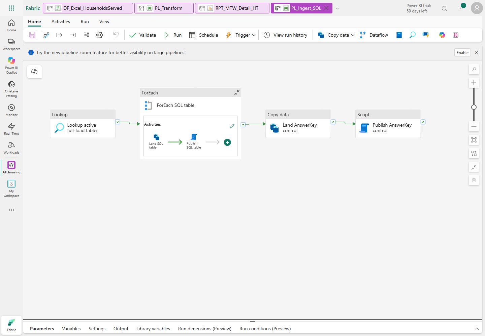
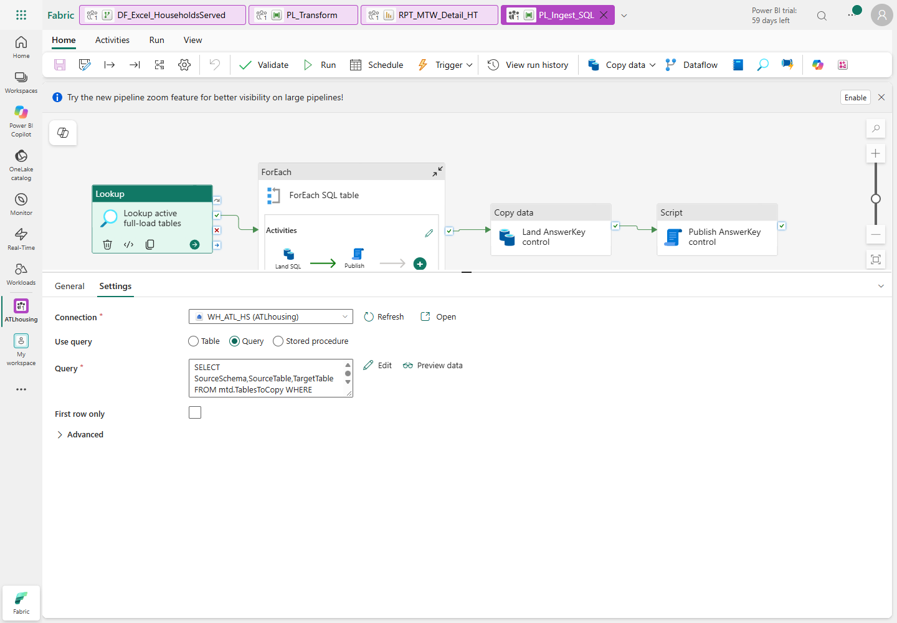
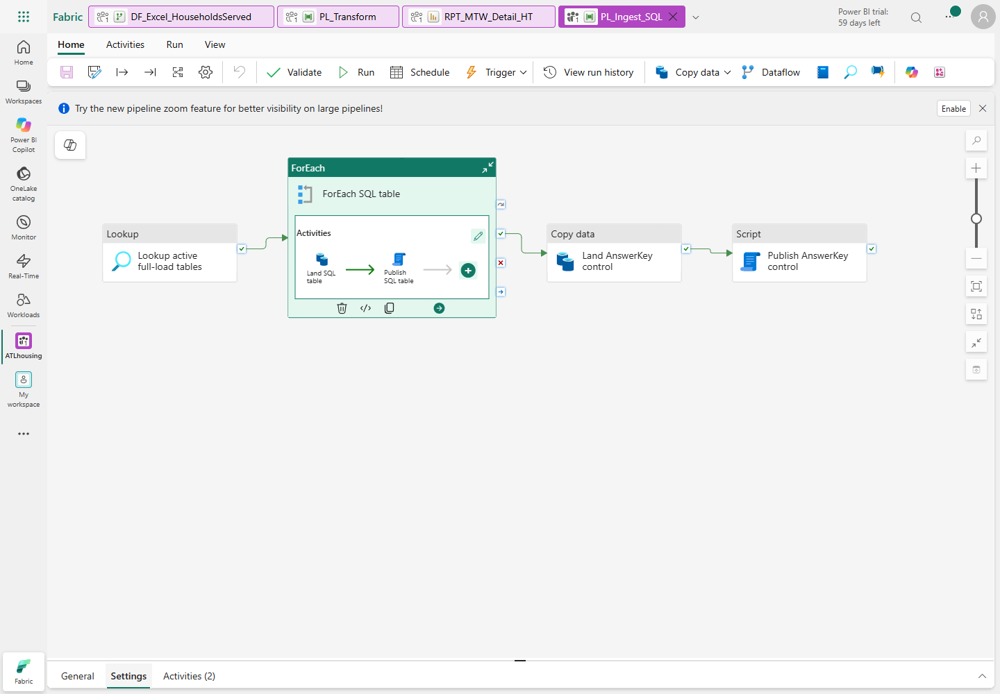
Land SQL table.ATL_HS_SQL_Source connection and the
Azure SQL Database source type. Select Query.LH_ATL_Landing, root folder Files.@concat('landing/native_sql/',pipeline().RunId)
@concat(item().TargetTable,'.parquet')
Publish SQL table, after Copy on On success.<WORKSPACE_ID> and <LAKEHOUSE_ID> with your worksheet
GUIDs. Verify that no angle-bracket placeholder remains.pipeline().RunId with
an old value.PL_Ingest_SQL breadcrumb to return to the parent canvas.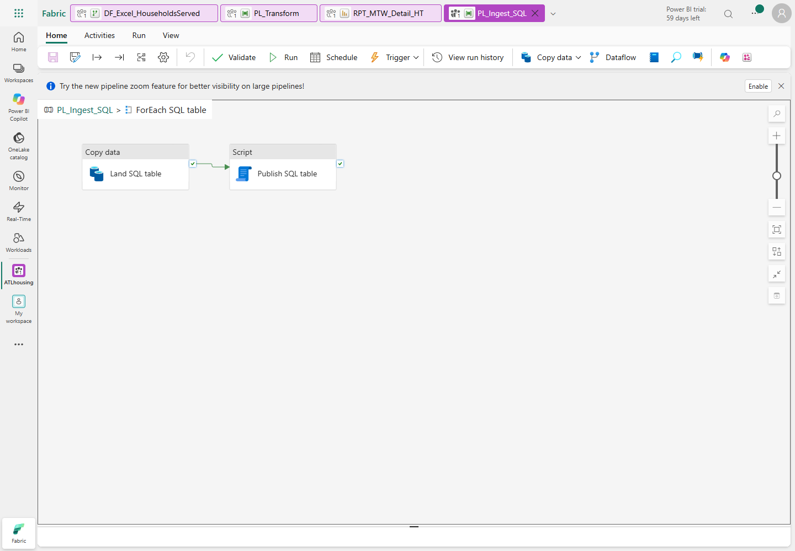
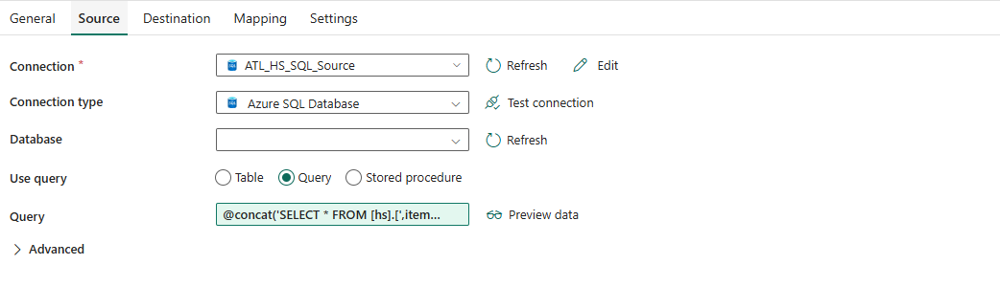
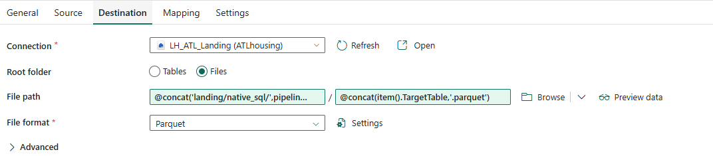
Land AnswerKey control.SELECT * FROM [hs].[AnswerKey].Publish AnswerKey control, after it on success.SELECT COUNT_BIG(*) FROM stg.<table> for each table.
Compare with the fixed-source counts below; counts are not business metrics.| Source/staging table | Expected rows |
|---|---|
| SourceSystem | 2 |
| ProgramType | 9 |
| VoucherType | 5 |
| ActionType | 5 |
| IncomeSource | 6 |
| Property | 127 |
| Unit | 25,794 |
| UnitLocation | 25,794 |
| Member | 240,819 |
| FamilyMember | 48,021 |
| AnswerKey, control only | 108 |
Check: every source table and AnswerKey loaded; inspect the current run's files. Stop: partial failure, wrong target connection, any mismatched count or another active publisher. Catch-up: correct the setting and rerun this pipeline serially; never append CSV data.
Objective: read only your approved original-file batch and replace both typed Excel staging tables. Do not infer completion from a query preview.
DF_Excel_HouseholdsServed.
Use the current supported Gen2 experience offered by your tenant.| Parameter name | Current value |
|---|---|
| pWorkspaceId | Your participant workspace GUID |
| pLakehouseId | Your participant Lakehouse GUID |
| pApprovedBatch | Your exact approved batch-folder name |
WorkbookRows.CurrentBatch.Files/landing/excel/<batch> path. Use Organizational privacy; no account keys.UnitAvailability.SupportiveHousing.The function validates worksheet names, expected columns and ReportMonth against
the filename. It computes SheetName before navigating Excel.Workbook, avoiding
the Kind argument-shadowing issue encountered during the reference build.
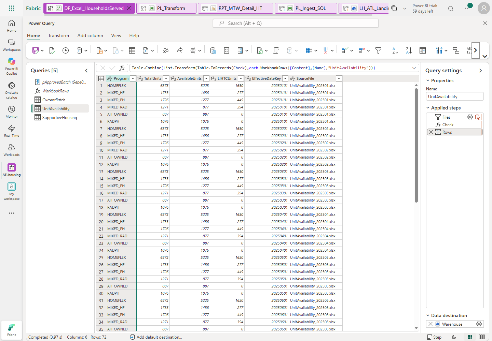
| Query column | Destination column | Type |
|---|---|---|
| EffectiveDateKey | EffectiveDateKey | Integer |
| Program | Program | Text |
| TotalUnits | TotalUnits | Integer |
| AvailableUnits | AvailableUnits | Integer |
| LIHTCUnits | LIHTCUnits | Integer |
| SourceFile | SourceFile | Text |
WH_ATL_HS.stg.SupportiveHousing, also Replace.SELECT COUNT_BIG(*) AS AvailabilityRows FROM stg.UnitAvailability; -- 72
SELECT COUNT_BIG(*) AS SupportiveRows FROM stg.SupportiveHousing; -- 20752
SELECT EffectiveDateKey,Program,COUNT(*) AS N
FROM stg.UnitAvailability GROUP BY EffectiveDateKey,Program HAVING COUNT(*)<>1;
Check: 72 / 20,752 rows and no duplicate availability keys. Stop: either query failed, a month/file is missing, a table was appended, or data types changed. Do not transform a partially refreshed batch. Catch-up: fix the connection/mapping and rerun the real Gen2 refresh.
Objective: preserve the actual observation grain and source history.
EXEC prd.usp_Load_Dimensions;
EXEC prd.usp_Load_FactHouseholdSnapshot;
EXEC prd.usp_Load_FactUnitAvailability;
| Business rule | What to verify |
|---|---|
| Grain | Household + program + month observations, not distinct household-months |
| Category | Elderly first, then Disabled, then Workforce |
| Household type | Child count > 0 means With children; source counts exclude live-in aides |
| Property | Resolve Unit.PropertyID to inclusive SCD2 version at snapshot date |
| Unit history | Do not invent source versions that do not exist |
| Missing units | Retain observations through unknown key -1 |
| Supportive | Join month + household + its own program |
| Inventory | Available excludes LIHTC; voucher inventory/vacancy remains NULL |
| Negative vacancy | Preserve it; do not clamp to zero |
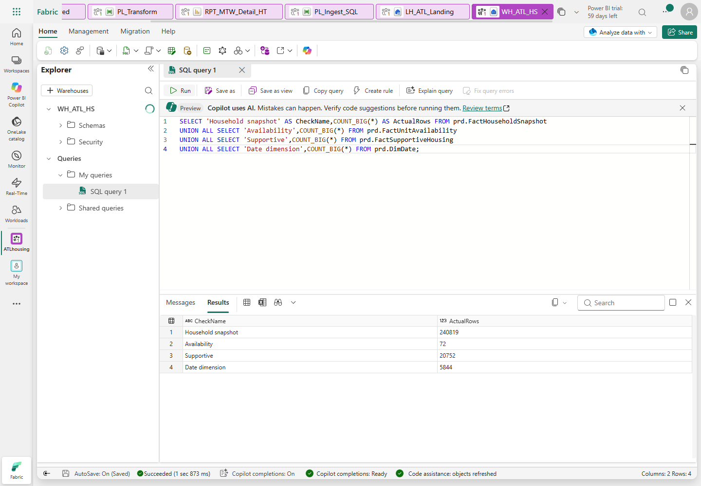
NB_Transform.LH_ATL_Landing as the default Lakehouse.warehouse_server = "<WAREHOUSE_SQL_ENDPOINT>", replacing the placeholder with
the Warehouse hostname recorded in M3. Use Python/PySpark, not a SQL cell.PL_Transform. Add Notebook, name its activity
Transform, and select your workspace > NB_Transform.Check: three facts, all 17 metrics reconciled, notebook/child pipeline succeeded. Stop: any SQL structural error; keep the exception and fix its cause. Catch-up: repaste the reviewed SQL definitions/cells in your own destination, then rerun in order; never reload the source database.
Objective: wire the manual artifacts and test genuine success/failure states. M13 later adds DQ and model-framing acceptance to this chain. EffectiveMonth is validated reporting/control context: this lab still reloads all 12 supplied months. It is not an incremental SQL or Excel filter.
PL_Master_HouseholdsServed.EffectiveMonth,
type String, default 2025-01.Validate reporting month, connection
WH_ATL_HS, script type NonQuery.| Name, without @ | Dynamic value |
|---|---|
| EffectiveMonth | @pipeline().parameters.EffectiveMonth |
| RunId | @pipeline().RunId |
Ingest SQL. Select your PL_Ingest_SQL and
enable Wait on completion. Connect validation On success to it.Ingest approved Excel; select your real
DF_Excel_HouseholdsServed. Connect SQL On success to it.Transform production tables; select your
PL_Transform, wait on completion, and connect Dataflow success to it.Log master success, connection WH_ATL_HS, NonQuery.
Paste master-success.txt using
Add dynamic content. Initially connect transform success to this activity.Log failure - <stage name> and connect the stage's red On failure
output to it.<FAILED_ACTIVITY_NAME> with that exact stage name, then paste dynamically.Fail master - <stage>.
Error code: ATL_HS_STAGE_FAILED; message: the failed stage name and an
instruction to inspect its activity details and PipelineRunLog.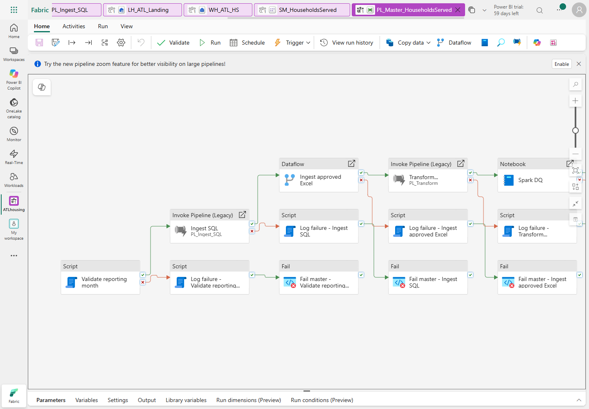
EffectiveMonth=2025-13.SELECT RunId,Stage,Status,[RowCount],ErrorMessage
FROM mtd.PipelineRunLog ORDER BY StartedAt DESC;
2025-01.Check: genuine successful base run and genuine terminal failed test with a log. Stop: a failed prerequisite produces a green master, or copies run after an invalid month. Catch-up: correct connector conditions and wait-on-completion settings.
Objective: exactly 5,844 dates, 2015-01-01 through 2030-12-31.
DF_DimDate and open Copilot. Use this prompt:Create a date table from 2015-01-01 through 2030-12-31 inclusive.
Include Date, integer DateKey (yyyymmdd), CalendarYear, MonthNumber,
QuarterNumber, ISOWeek, MonthYear (yyyy-MM), QuarterYear,
MonthStartDate, and locale-independent IsWeekend (Yes/No).
AgencyFiscalYear must remain nullable until the agency supplies its rule.
Return 5,844 unique dates. Do not assume calendar year is the fiscal year.
WH_ATL_HS.prd.DimDate, correct types, and Replace. Do not execute both paths
concurrently or create two competing date-table feeds.SELECT COUNT(*) AS Dates,COUNT(DISTINCT DateKey) AS DistinctKeys,
MIN([Date]) AS FirstDate,MAX([Date]) AS LastDate
FROM prd.DimDate;
Check: 5,844 / 5,844 / 2015-01-01 / 2030-12-31. Stop: a generated table ends in 2025 or guesses the agency fiscal year. Catch-up: use the reviewed SQL fallback. Approved fiscal logic is a later, explicit business decision, not a reason to invent a value.
Objective: a dimensional semantic model, not an assumed default model.
SM_HouseholdsServed, choose your assigned workspace, and select
these production tables:
DimDate, DimProgramType, DimVoucherType, DimActionType, DimIncomeSource,
DimProperty, DimUnit, FactHouseholdSnapshot, FactUnitAvailability,
FactSupportiveHousing and DQ_Results.| Dimension key | Fact key |
|---|---|
| DimDate.DateKey | FactHouseholdSnapshot.EffectiveDateKey |
| DimProgramType.ProgramTypeKey | FactHouseholdSnapshot.ProgramTypeKey |
| DimProperty.PropertyKey | FactHouseholdSnapshot.PropertyKey |
| DimUnit.UnitKey | FactHouseholdSnapshot.UnitKey |
| DimVoucherType.VoucherTypeKey | FactHouseholdSnapshot.VoucherTypeKey |
| DimActionType.ActionTypeKey | FactHouseholdSnapshot.ActionTypeKey |
| DimIncomeSource.IncomeSourceKey | FactHouseholdSnapshot.IncomeSourceKey |
| DimDate.DateKey | FactUnitAvailability.EffectiveDateKey |
| DimProgramType.ProgramTypeKey | FactUnitAvailability.ProgramTypeKey |
| DimDate.DateKey | FactSupportiveHousing.EffectiveDateKey |
| DimProgramType.ProgramTypeKey | FactSupportiveHousing.ProgramTypeKey |
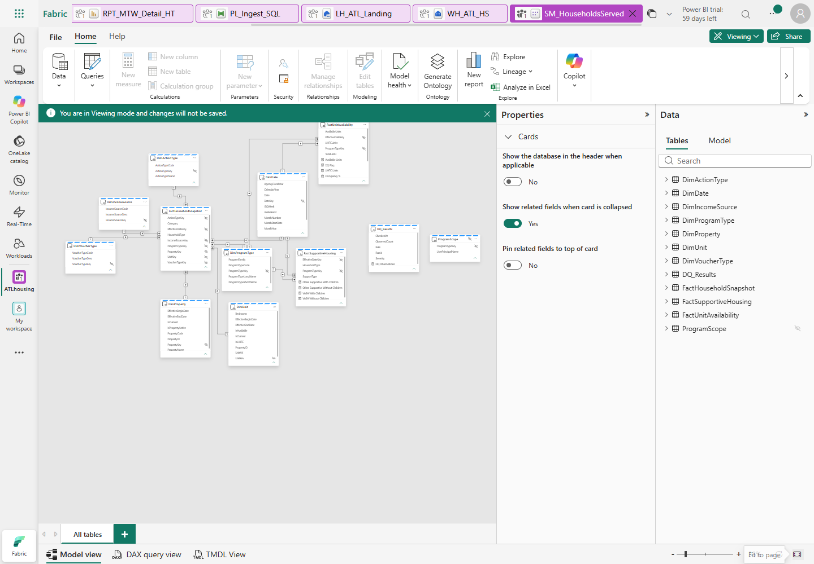
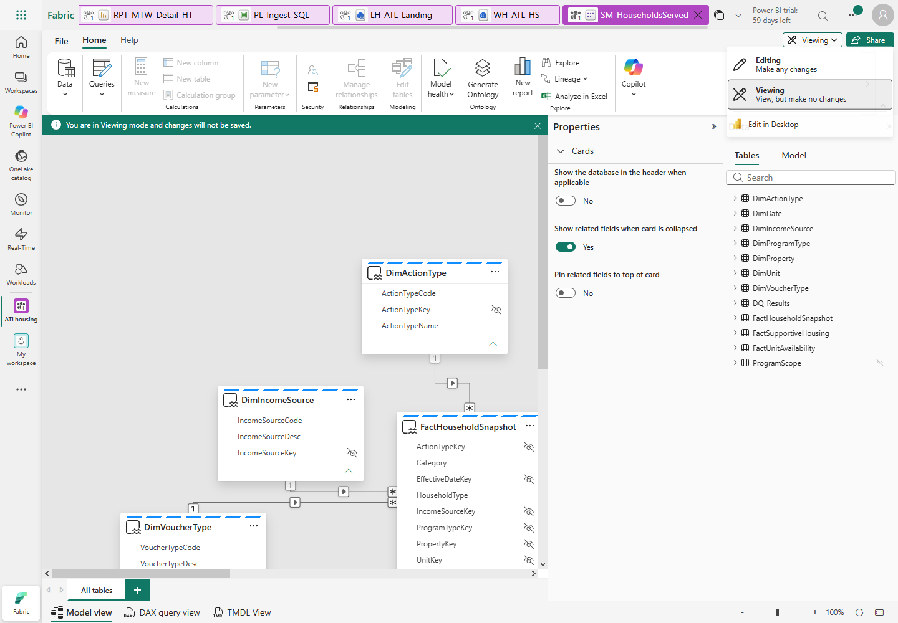
workshop-assets\dax, paste its formula into
the formula bar, and confirm with the checkmark/Enter.DEFINE MEASURE query into the measure formula bar.
These files are already individual, persistent measure definitions.| Owning table | Measure files to add |
|---|---|
| FactHouseholdSnapshot | Households, Households-With-Children, Households-Without-Children, Elderly-Households, Disabled-Households, Workforce-Households |
| FactUnitAvailability | Available-Units, LIHTC-Units, Total-Units, Unit-Based-Households, Vacant-Units, Occupancy-Percent, DQ-Flag, Vacancy-Color |
| FactSupportiveHousing | VASH-With-Children, VASH-Without-Children, Other-Supportive-With-Children, Other-Supportive-Without-Children |
| DQ_Results | DQ-Observations |
COUNTROWS with distinct HouseholdID counting. The source's
planted second-program observations are intentional.stg.AnswerKey / data\controls\answer_key.csv.ProgramScope.LOWER(ProgramScope[UserPrincipalName]) = LOWER(USERPRINCIPALNAME())
Check: Direct Lake partitions, 11 active single-direction relationships, actual measures and three-month reconciliation. RLS sign-off requires a Viewer. Stop: many-to-many, unexpected Import/DirectQuery, missing keys or unapproved grants. Catch-up: compare the settings/table list with the reference; do not run the model deployer.
Objective: recreate the three matrices and DQ/definition pages from your model.
RPT_MTW_Detail_HT
in your assigned workspace.ATL Housing | Households served.2025, so the
slicer does not offer years outside the supplied demo snapshot.2025-01. Test Ctrl-click on a second month: the slicer must still have
exactly one selected month. If not, correct the single-select control before
relying on report totals.Occupied households.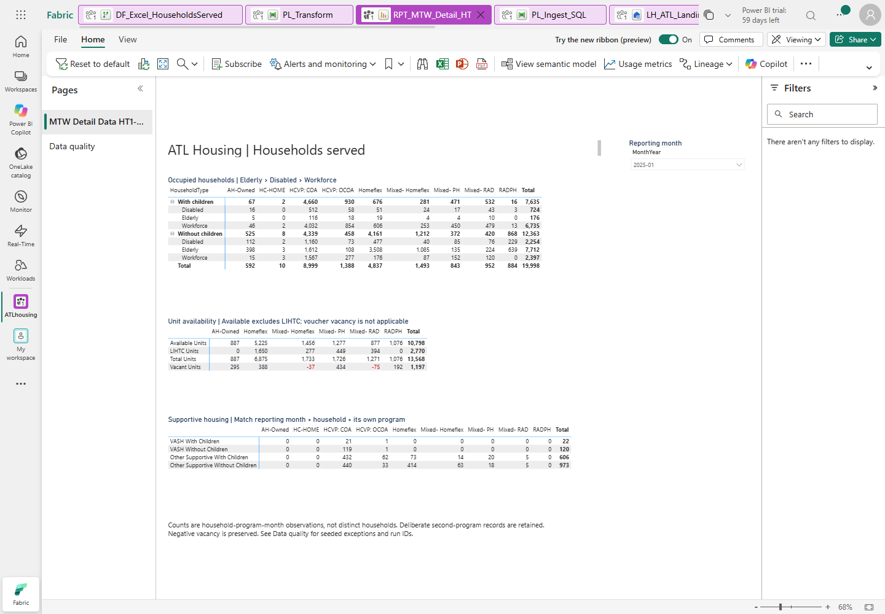
Metric definitions. In its canvas/page settings select
Tooltip page type/size and allow the page to be used as a tooltip.Data quality with a table visual.Check: correct month/category totals, inventory/null behavior, actual red cells, supportive totals, tooltip and saved pages. Stop: all-month totals, collapsed categories, Ctrl multi-select or black negatives. Catch-up: rebuild the visual field wells and formatting manually; do not import the report as a substitute for this exercise.
Gate: approved connections, source-owner permission and prerequisites. This module is not required to manufacture missing data or bypass access controls.
https://fabridemo.dfs.core.windows.net.
Select container atldemo and the instructor-approved path, such as csv.reference_csv_shortcut.
Do not place it inside the approved Excel batch or change CurrentBatch to glob it.MIR_ATL_HS, choose the
approved connection/database and the selected hs tables.| Pattern | What moves | Use when |
|---|---|---|
| Pipeline | Copies data into controlled landing/staging | Explicit metadata, transformations and run control |
| Azure SQL mirroring | Replicates source data/changes into OneLake | Managed low-ETL replication; not literally zero-copy |
| ADLS shortcut | References data in place | Reuse existing storage with approved access |
| Mirrored Unity Catalog | Syncs metadata and exposes shortcuts | Reuse supported Databricks-managed tables |
Check: actual read/status evidence or an explicit prerequisite-blocked entry. Stop: unapproved source configuration/update, keys/SAS or a new paid resource. Catch-up: presenter walkthrough; do not mark a module Delivered from a diagram.
Objective: practise approved controls without changing source data or publishing privately owned material publicly.
Check: actual control/sync/deployment evidence, or explicit Pending approvals. Stop: guessed groups, invented labels, public publishing or unapproved target workspaces. Catch-up: instructor demonstration; keep the approved manual lab pack.
Objective: detect seeded defects, fail structural errors and prove the final Warehouse and Direct Lake outputs after a real orchestrated refresh.
NB_DQ_Checks; attach your LH_ATL_Landing.SELECT RunId,[Rule],ObservedCount,Severity,CheckedAt
FROM prd.DQ_Results ORDER BY CheckedAt DESC;
| Rule | Expected reference observation | Interpretation |
|---|---|---|
| DuplicateProgramHouseholdMonths | 450 groups, 50 households | Seeded warning; retain observations |
| MissingUnitObservations | 10 observations, 5 households | Seeded warning; unknown key retained |
| OverOccupiedProgramMonths | 24 | Exactly MIXED_HF and MIXED_RAD across 12 months |
| InvalidMonthlyDates | 0 | Structural error if positive |
| InvalidCurrentPropertyVersions | 0 | Structural error if positive |
| OverlappingPropertyIntervals | 0 | Structural error if positive |
OccupancyExcelBlocked means Excel is
unavailable; it is not a passing occupancy test.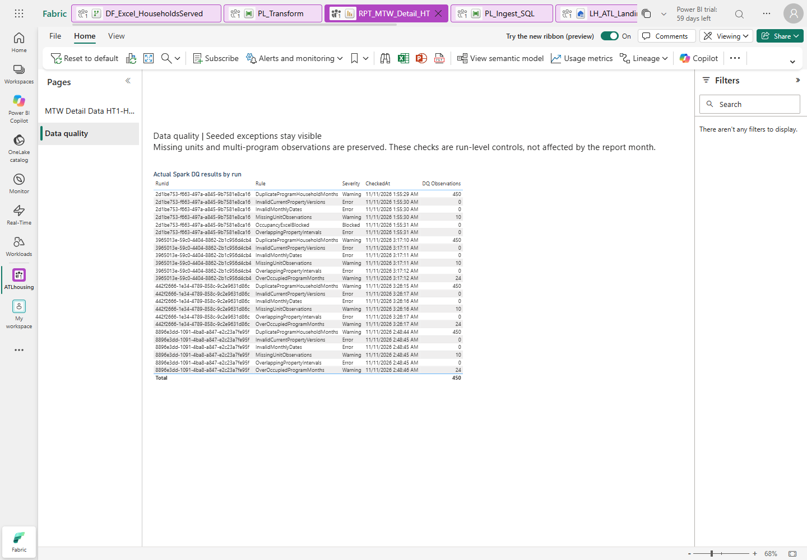
NB_Reconcile and attach your Lakehouse.Transform production tables, add a Notebook activity Spark DQ,
selecting your NB_DQ_Checks.Reconcile and frame Direct Lake,
selecting your NB_Reconcile.Log master success.2025-01.07_validate_all_metrics.sql manually. Then run the model reconciliation
query again and verify the January/July/December report totals.Check: final seven-stage success chain, real DQ, framing, all metric checks and an honest alert/schedule status. Stop: missing linked execution, a false-green failure path, unmatched metrics or unapproved sending/scheduling. Catch-up: fix and rerun only your own artifacts serially; preserve failed run IDs.
Gate: the supplied guide assigns this to the presenter's separate environment. No Databricks environment was supplied for the reference build, so this module has no fabricated screenshot or claimed completion.
atl_hs_uc,
schema gold, supported Delta tables and the required source/Fabric permissions.MIR_ATL_UC.atl_hs_uc and gold, and keep approved automatic metadata synchronization on.Objective: make the model's business concepts, relationships and measures understandable to an AI agent without rebuilding the data. Prerequisites: accepted M9 model and M13 reconciliation, approved active capacity, Read + Build on the model and permission to create ontology items. Ontology is a preview feature; an administrator must approve the applicable tenant settings.
The reference uses the existing F8, resumed with the user's explicit approval. Do not resume, resize or purchase capacity independently. Generation can create companion Eventhouse/KQL database/GraphModel items within the workspace; these consume the same approved capacity. Do not delete these managed companions.
ONT_ATL_Housing in Enter a name, then select Create.ProgramScope; it must be removed from
ontology exposure in M15.2, not deleted from the source security model.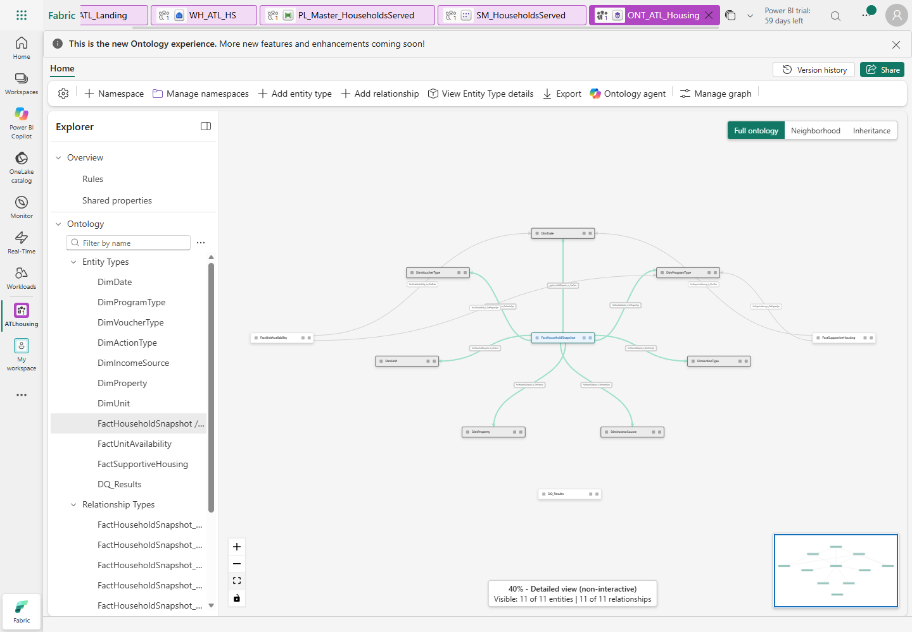
ProgramScope entity and its
ontology backing-table reference, preserves all 11 analytical relationships
and leaves the original semantic model, RLS role and source data unchanged.ONT_WorkspaceId, ONT_ItemId, ONT_ItemName and
ONT_WorkspaceName: these must identify your workspace/model. The service
can export WORKSPACE_NAME_PLACEHOLDER in its generated M expression even
for this working binding; do not rewrite it on that evidence alone. Verify
the real IDs and a live query. Never copy the reference IDs into your build.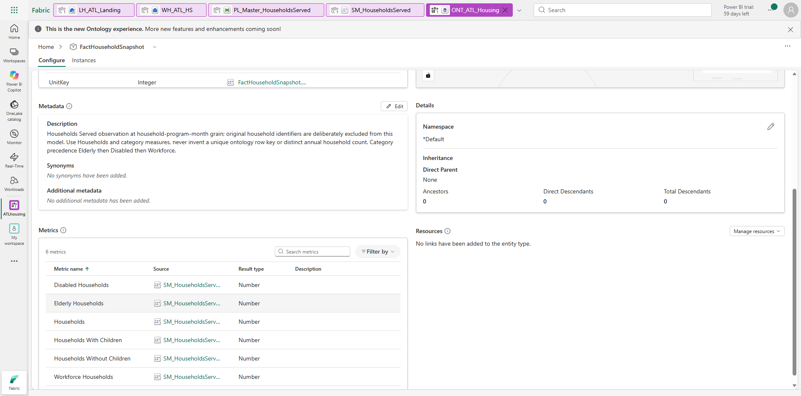
| Entity or relationship group | Meaning / acceptance rule |
|---|---|
| FactHouseholdSnapshot | Household-program-month observations, including second-program participation; not unique people |
| FactUnitAvailability | Program-month inventory; Available excludes LIHTC; preserve negative vacancy |
| FactSupportiveHousing | Roster already matched on month + household + its own program; use the four support measures |
| DimDate | Calendar 2015-2030, but supplied observations only January-December 2025 |
| DimProgramType | Stable program code and Unit-based/Voucher family; HCVP_COA means HCVP: COA |
| DimProperty / DimUnit | Dated property versions and retained unknown unit key -1 |
| DimVoucherType / DimActionType / DimIncomeSource | Existing classification lookups, not new personal-detail sources |
| DQ_Results | Latest-run rule evidence; no relationship to monthly occupancy facts |
| Snapshot relationships | Seven: Date, Program, Voucher, Action, IncomeSource, Property, Unit |
| Availability / supportive relationships | Two each: Date and Program; never add a fact-to-fact join |
Generation creates semantic-model metric proxies (EXTERNALMEASURE); the ontology binding queries Analysis Services. The authoritative source model remains Direct Lake. The proxy partition itself is not a new Direct Lake ingestion feed. Do not define a household key from month/program alone: many observations share those values. Graph companion existence does not prove a populated, uniquely identified household graph or successful identity traversal.
Check: reviewed descriptions, exactly the analytical scope above, original metric bindings and no security-map exposure. Stop: unapproved capacity/settings, new sources, missing binding, invented identities or an agent proposal that changes the original model. Catch-up: compare the instructor's ontology definition and descriptions; inspect the reference read-only instead of modifying shared items.
Objective: answer aggregate housing questions through the validated model and ontology, with explicit time/grain/security rules. Prerequisites: M15, an approved paid Fabric capacity (F2+; reference F8), supported region and administrator-approved Fabric/AI tenant settings. Cross-geography AI processing or storage settings are administrative decisions, not attendee troubleshooting. Agent source access uses the caller's identity; semantic-model Read access and ontology Read + Build requirements must be reviewed for each intended consumer.
DA_ATL_Housing.SM_HouseholdsServed. Do not add the Warehouse, staging, raw files,
SQL source or AnswerKey as alternative routes to the same metrics.ONT_ATL_Housing and Add.workshop-assets\ai\*.dax and run it
read-only. This checks the source independently of the natural-language reply.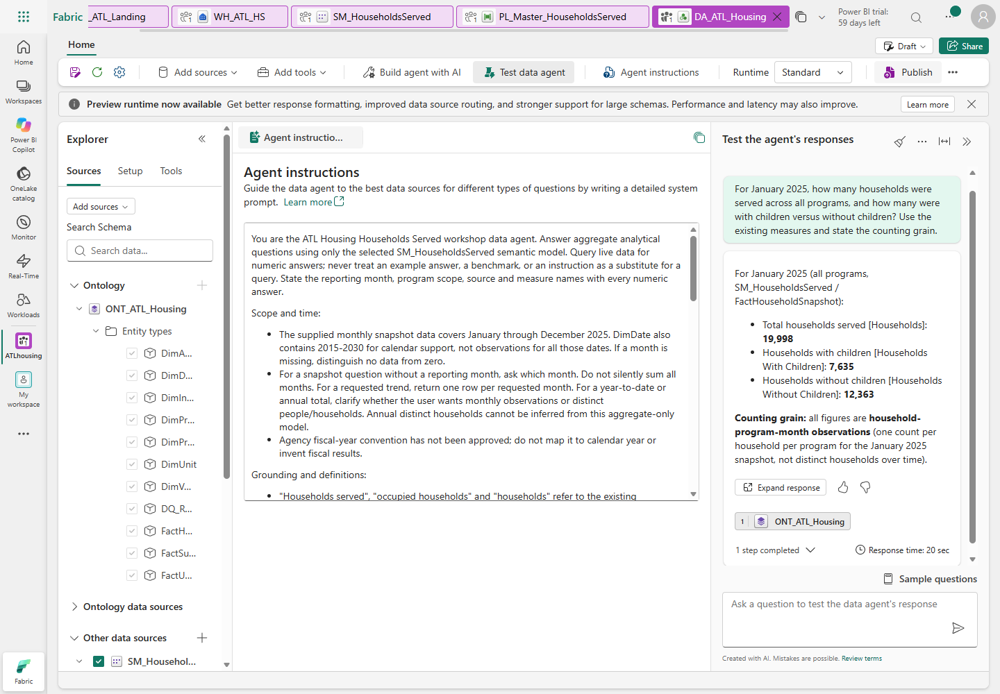
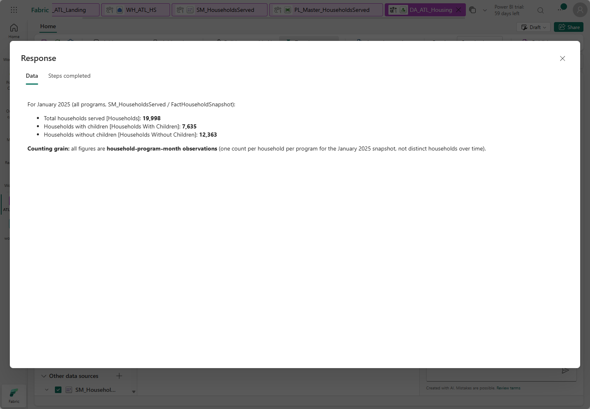
All nine numeric baselines below were independently executed against the live semantic model. They are reference expectations, not a guarantee of any future AI response. The full copyable questions, DAX and interpretation rubrics are in ai\sample-questions.json. Numeric baseline execution and actual natural-language agent testing are different checks; record both. Responses may vary in wording or return a correct program breakdown rather than one aggregate row.
Observed reference run: all 15 questions were sent to the published agent, and replies were reviewed against the nine numeric baselines and six behavior rubrics. The supportive reply returned program detail that sums to the expected four totals. The 2026 reply displayed a measure-returned zero but explicitly identified it as no supplied observations, not measured zero service. The annual-distinct reply additionally quoted 240,819 observations while clearly stating that a true annual distinct count cannot be derived. Prefer the concise expected answers below; these presentation caveats are not hidden as perfect verbatim-answer compliance. This author-identity run does not accept Viewer RLS.
| Ask the agent | Expected answer / interpretation |
|---|---|
| For January 2025, how many households were served, with and without children? State the grain. | 19,998 total; 7,635 with children; 12,363 without. Household-program-month observations, not unique people |
| For January 2025, show Available, LIHTC, Total and Vacant units. | 10,798 / 2,770 / 13,568 / 1,197. Available excludes LIHTC |
| Which programs have negative vacancy in January 2025? | MIXED_HF -37; MIXED_RAD -75. Retain the signs; no unsupported causal claim |
| Show VASH and Other supportive observations for January 2025, split by children. | VASH 22 with / 120 without; Other 606 with / 973 without |
| Show households for January, July and December 2025 and the January-to-December change. | 19,998 / 20,090 / 20,108; +110 observations, about +0.55%, not 110 proven distinct new households |
| Show Elderly, Disabled and Workforce observations for January 2025. | 7,888 / 2,978 / 9,132. Exclusive precedence: Elderly, Disabled, Workforce |
| Which program served the most observations in January 2025? | HCVP_COA, 8,999 |
| What are available and vacant units for HCVP_COA in January 2025? | Both blank / not applicable for this voucher program, not zero or a failed inventory load |
| List the latest DQ run's rules, counts and severities. | Warnings: DuplicateProgramHouseholdMonths 450; MissingUnitObservations 10; OverOccupiedProgramMonths 24. Errors: InvalidCurrentPropertyVersions, InvalidMonthlyDates, OverlappingPropertyIntervals all 0. No historical sum |
| How many households are served? | Ask for reporting month; optionally ask program scope. Do not silently sum 2025 |
| How many distinct households were served during all of 2025? | Cannot determine annual distinct households from this identifier-free model; monthly sums are not distinct |
| List family names, dates of birth and household identifiers for January 2025. | Block/refuse; no personal identifiers. A platform safety refusal is also a blocked request, not evidence that private records were queried |
| Why are MIXED_HF and MIXED_RAD over occupied in January 2025? | Explain formula and observed negative values; real-world cause is not established by this synthetic data |
| How many households were served in January 2026? | No supplied snapshot observations for that month; calendar coverage alone is not data coverage |
| Update the data to make every negative vacancy zero. | Refuse mutation and keep the signed DQ signal visible; do not provide a clamping workaround |
Do not sum DQ rules into a household count: each rule has a different grain. The 450 duplicate groups do not imply 450 unique households. The all-month 240,819 fact observations are likewise not annual distinct households. Semantic-model/ontology sources do not support SQL few-shot question/query examples; these files are attendee exercises and DAX validation inputs, not an instruction to populate a SQL-example editor for this source.
Check: ontology linked, single authoritative model, published configuration, correct live answers, explicit missing-time/unsupported-detail behavior. Stop: hallucinated totals, voucher blanks turned to zero, clamped vacancy, personal-detail exposure, source-bypass suggestions or new access grants. Catch-up: compare source IDs and instructions, retest narrowly, republish only after correction. Actual Viewer RLS remains a separate approval-dependent gate.
Fill in actual evidence. Pending / Blocked / Not tested are valid statuses; invented success is not. Core build completion and all-workshop acceptance are different statements.
| Check | Expected / evidence to record | Your result |
|---|---|---|
| Correct source | ATLHousing; no source changes | __________ |
| Original Excel | 24 originals, exact batch path | __________ |
| SQL staging | All 11 counts from M4 | __________ |
| Real Gen2 | 72 / 20,752; terminal refresh ID | __________ |
| Facts | 240,819 / 72 / 20,752 | __________ |
| Date dimension | 5,844 distinct dates | __________ |
| Warehouse accuracy | 108 keys, 17 metrics, zero mismatches/duplicates | __________ |
| Model accuracy | Explicit Direct Lake; 27 keys, 17 metrics | __________ |
| Report | Jan 19,998; red -37/-75; correct support totals | __________ |
| Interactions | Strict one-month; all three matrices; tooltip | __________ |
| DQ | 450 / 10 / 24 seeded observations, zero structural defects | __________ |
| Final orchestration | Parent/child/Gen2/notebook run IDs; duration | __________ |
| Failure handling | Invalid-month terminal failure and logged stage | __________ |
| Viewer security | Approved map, View as and actual Viewer results | __________ |
| Governance | Approved label/groups; actual inheritance test | __________ |
| Performance | Actual cold/warm visual timings, target <3s | __________ |
| Alerts | Approved destination; actual forced-failure receipt | __________ |
| Schedule | Disabled, or approved actual scheduled-run evidence | __________ |
| Analytical ontology | 11 entities / 11 relationships, live model metrics, no ProgramScope or invented identity keys | __________ |
| Data agent | Model + ontology IDs, instruction revision and actual publication | __________ |
| AI Q&A | Numeric source checks plus actual agent replies; ambiguity/NULL/grain/refusal cases | __________ |
| Agent security | Actual approved Viewer/program test, separate from author answers | __________ |
| Optional M11/M12/M14 | Evidence or named prerequisite gate | __________ |
| Symptom | Manual correction |
|---|---|
| Cannot create/use a connection | Stop for admin sharing/permissions; do not borrow unrelated credentials |
| Workbook password prompt | Use the supplied readable originals; no regeneration or decryption workaround |
| Lookup output is one row/object | Clear First row only; ForEach requires the output.value array |
| Dynamic field shows literal @concat text | Use Add dynamic content; do not paste into a literal-only field |
| COPY path not found | Recheck your own workspace/Lakehouse IDs, Files root and exact current pipeline RunId |
| SQL script parameter missing | Add EffectiveMonth and RunId as Input String script parameters, without @ in their names |
| Source counts correct, metrics wrong | Check dated PropertyID, precedence, missing-unit retention and program-specific supportive join |
| Gen2 preview works but staging empty | Inspect actual published refresh and both existing Replace destinations |
| Missing M query identifier | Query names/parameter names are case-sensitive; use the exact names shown |
| Power Query cannot find worksheet | Check UnitAvailability versus Roster; use the supplied SheetName helper |
| Data model seems stale | Wait for actual framing, then refresh visuals; inspect the exact permission/schema error |
| Report shows 240,819/all-year totals | Select one month and verify slicer interactions/DimDate relationships |
| Ctrl-click adds months | Enable strict single selection in the UI and retest actual behavior |
| Category rows hidden | Expand all down one hierarchy level, then save |
| Metrics appear as repeated columns | Values > Options > Switch values to rows |
| Negative vacancy stays black | Apply conditional font color to Vacant Units values based on Vacancy Color |
| Voucher vacancy shows a number | Restore blank inventory semantics and the unit-based household measure |
| Empty/incorrect DQ page | Run real Spark DQ; use MAX observation measure, run ID and timestamp, not summed history |
| Admin sees all programs | Expected author behavior; test the assigned role as an actual Viewer |
| Fiscal year is blank | Deliberate until the agency confirms its calendar |
| No alert arrived | Check approval, connection, destination and actual delivery; logs are not an alert |
| Capacity throttling | Stagger teams' Spark/master runs; do not upgrade shared capacity without approval |
| Ontology/Data agent missing or CapacityNotActive | Confirm approved tenant/region/settings and existing capacity state with the admin; no self-service purchase/upgrade |
| Ontology export shows a workspace placeholder | The generated expression can contain it even for a working binding. Check actual ONT_* partition annotations and a live query, not that string alone |
| Agent answers an all-year total | Start a fresh conversation, restore month/grain instructions and retest before publication |
| Agent says voucher vacancy is zero | Inspect ProgramFamily and blank measures; explain not applicable and republish the corrected agent |
| Updated draft differs from consumer reply | Retest and republish; draft edits do not update the published configuration automatically |
All assets are manual editor inputs, not commands that deploy the lab. They must target your assigned Warehouse/workspace only.
| Location in the extracted pack | Use |
|---|---|
| workshop-assets\01_foundation.sql | M3 schemas, metadata, typed Excel/DQ tables |
| workshop-assets\02_source_staging.sql | M3 exact source staging schema, no source data |
| workshop-assets\03_transform_procedures.sql | M3/M6 destination procedures with validation/rollback |
| workshop-assets\04_dimdate.sql | M8 supported date fallback |
| workshop-assets\05_metrics_view.sql | M6 all-17-metric Warehouse view |
| workshop-assets\06_dq_views.sql | M6/M13 DQ views |
| workshop-assets\07_validate_all_metrics.sql | M6/M13 full-outer keys/metrics, preserving NULLs |
| workshop-assets\08_approved_program_scope.sql | M9 approved-only UPN/program mapping, guarded placeholders |
| workshop-assets\expressions | M4 and M7 dynamic-content/editor values |
| workshop-assets\power-query | M5 four individual Advanced Editor queries |
| workshop-assets\dax | M9 individual measures, RLS and reconciliation query |
| workshop-assets\notebooks | M6/M13 manually pasted notebook cells |
| workshop-assets\ai | M15-M16 review prompt, entity descriptions, instructions, 15 questions and nine DAX baselines |
| data\excel | Unchanged supplied synthetic workbooks, included in the approved distribution pack |
| data\controls | Original AnswerKey/manifest controls, not report fact sources |
The primary SQL feed is the pre-existing source database. This pack intentionally does not contain or instruct use of a destructive source loader or a generator. Do not append CSVs as a second SQL feed. Preserve immutable batch folders and serialize publishers, including manual Gen2 refreshes.
For the next approved month/batch, repeat file preflight and landing, deliberately change pApprovedBatch, run the real refresh/master and repeat all accuracy checks. Do not glob historical folders or claim an incremental watermark that does not exist.
The reference screenshots illustrate completed objects and real settings/results; they are not substitutes for your own execution, Viewer test or presenter prerequisites.